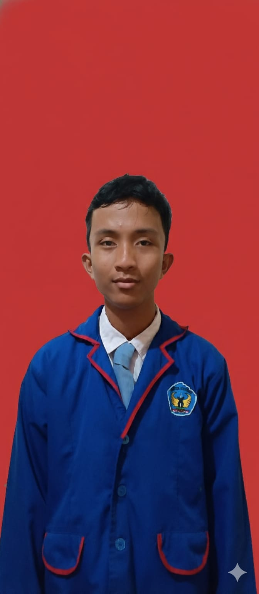
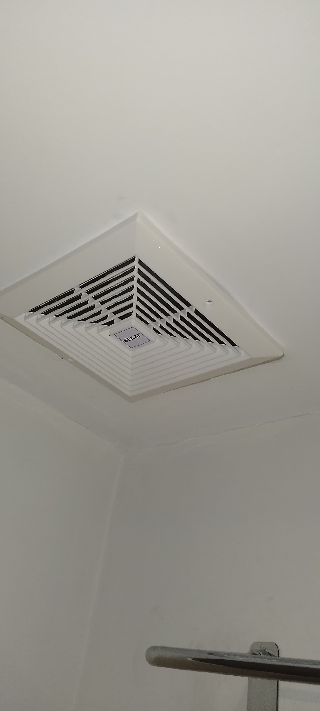
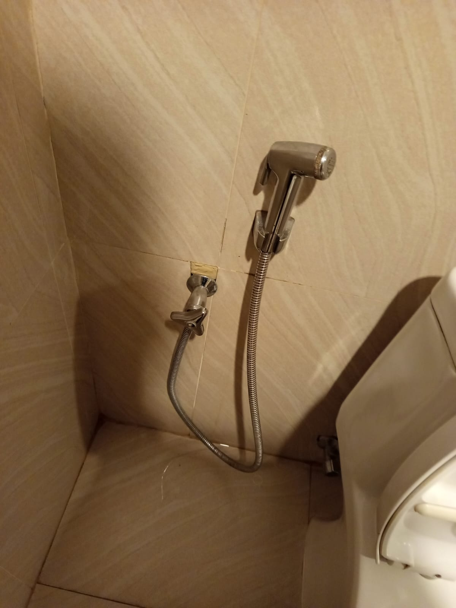
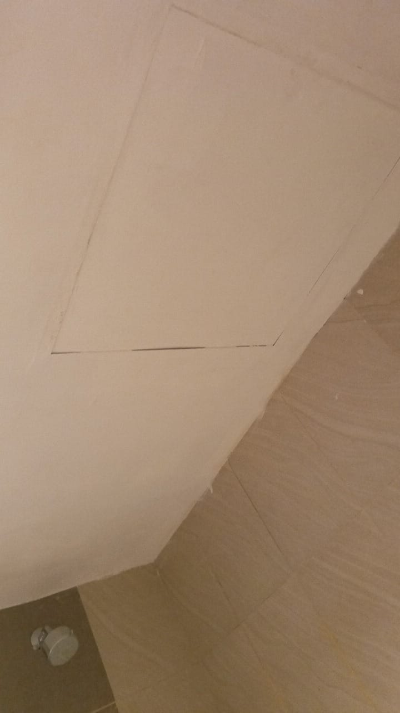
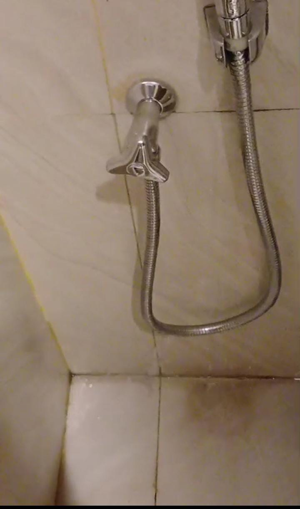

Rahmat Dani

Visi :
Menjadi grup manajemen hotel dan perhotelan internasional terkemuka
dengan reputasi global atas komitmennya dalam bermitra dengan pemilik hotel
untuk memaksimalkan keuntungan investasi mereka.
Misi :
Untuk menyenangkan para tamu dengan lingkungan yang unik dan
pengalaman yang dipersonalisasi.
Swiss-Belcourt Bogor (dulu Bogor Icon Hotel) adalah transformasi dari
Bogor Icon Hotel & Convention yang dikelola oleh Swiss-Belhotel International
sejak 1 Desember 2022, menjadikannya hotel keempat dari grup tersebut di
Bogor.
Melengkapi Swiss-Belhotel, Swiss-Belinn, dan Zest. Hotel ini menawarkan
306 kamar dan fasilitas lengkap untuk bisnis & liburan, dengan target melayani
pasar yang lebih beragam di Kota Bogor dengan standar internasional ``
Kelas : 12 TKJ
Bagian : maintenance
PKL Selama Bulan.


Mengecat kamar hotel adalah proses pelapisan ulang atau
pengecatan dinding kamar hotel ( termasuk plafon dan area interior
lainya ) dengan tujuan menjaga kebersihan estetika,dan
kenyamanan tamu. Fungsi cat kamar hotel krusial yang lebih dari
sekedar estetika melainkan aspek estetika higienitas perlindungan
dinding hingga pengalaman tamu.
Adapun Langkah Langkah saat mengecat kamar hotel:
a. Langkah pertama siapkan alat-alat seperti kaleng cat, koas, ember
cat, roll cat
b. Langkah kedua lalu cat bagian plafon, bath room, dingding kamar hotel
c. Langkah ketiga jika bagian tersebut sudah di cat dengan baru tunggu 15-30
mnt

Exhaust Fan adalah perangkat ventilasi untuk menyedot udara
kotor, panas, lembab, atau berbau dari dalam ruangan ke luar,lalu di
ganti udara segar. Fungsi Exhaust Fan mengeluarkan udara kotor,
panas, lembab,bau dan polutan dari dalam ruangan ke luar, serta
membantu sirkulasi udara segar masuk.
Adapun Langkah Langkah memasang Exhaust Fan:
a. Langkah pertama matikan lampu bathroom sebelum memulai
pemasangan.
b. Langkah kedua lepas Exhaust Fan lama dengan obeng. ( + )
c. Langkah ketiga pasang Exhaust Fan yang baru.
d. jika sudah terpasang Exhaust Fan yang baru nyalakan kembali lampu bathroom.

Memperbaiki Jet Spray adalah semprotan air genggam disebut juga
bidet spray atau semprotan yang di pasang di samping toilet duduk untuk
membilas area intim setelah buang air Fungsi Jet Spray untuk
pembersihan higienis area intim setelah menggunakan toilet memberikan
alternatif yang lebih bersih dan efisien daripada tisu toilet saja serta juga
bisa digunakan untuk membersihkan sekitar toilet dalam area di kamar
mandi
Adapun langkah langkah pemasangan Jet Spray :
A. Langkah pertama lepas selang Jet Spray yang bocor.
B. Langkah kedua lepas selang yang lama dengan yang baru dengan
tang.
c. Langkah ketiga pasang Jet Spray menggunakan kunci inggris.
proses Pengecetan

Setelah Proses Pengecetan

Hasil Pengecetan
Proses memperbaiki Exhaust fan
Proses Memperbaiki Jetspray

Setelah Proses Memperbaiki Jetspray